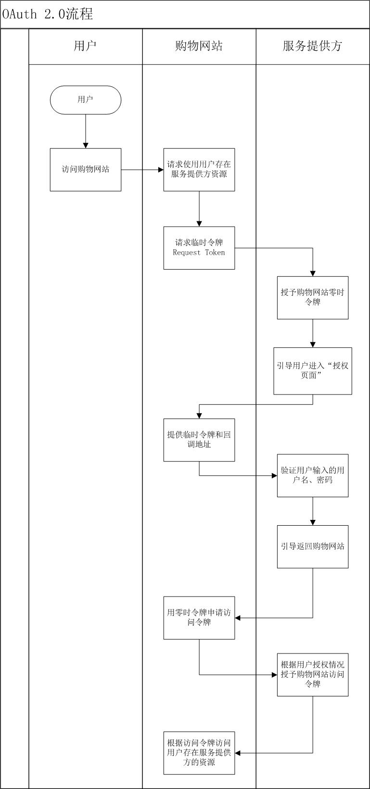
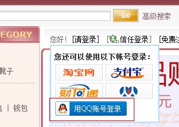
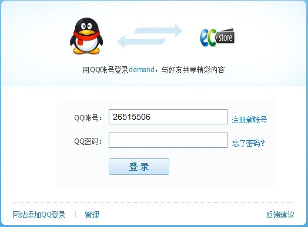

信任登录
简介
信任登录是指用第三方比较成熟的用户库来登录当前访问的网站。目前比较常见的第三方信任登录帐号如：QQ号淘宝帐号、支付宝帐号、微博帐号等。
信任登录的好处是可以利用第三方庞大的用户群来推广、营销网站，同时减少用户的注册、登录时间。
提到信任登录，我们就不得不提到oAuth，正是有了oAuth，我们的信任登录才得以实现。下面我们就来看下关于oAuth的一些介绍。
oAuth
我们看到维基百科对oAuth的解释如下；
OAuth（开放授权）是一个开放标准，允许用户让第三方应用访问该用户在某一网站上存储的私密的资源 （如照片，视频，联系人列表），而无需将用户名和密码提供给第三方应用。 OAuth允许用户提供一个令牌，而不是用户名和密码来访问他们存放在特定服务提供者的数据。每一个令 牌授权一个特定的网站（例如，视频编辑网站)在特定的时段（例如，接下来的2小时内）内访问特定的资源 （例如仅仅是某一相册中的视频）。这样，OAuth允许用户授权第三方网站访问他们存储在另外的服务提供者 上的信息，而不需要分享他们的访问许可或他们数据的所有内容。
- 由此可见oAuth 其实是一个协议，我们通过遵守这个协议来完成我们网站与第三方用户的信任登录。
oAuth 2.0流程
在维基百科上oAuth2.0的介绍如下：
OAuth 2.0是OAuth协议的下一版本，但不向后兼容OAuth 1.0。 OAuth 2.0关注客户端开发者的简易性，同时 为Web应用，桌面应用和手机，和起居室设备提供专门的认证流程。规范还在IETF OAuth工作组的开发中， 按照Eran Hammer-Lahav的说法，OAuth将于2010年末完成。

- 注：目前腾讯、淘宝平台都已经全面支持oAuth2.0。在下面的案例中，我们将以腾讯QQ为第三方服务商来展示我们是如何开发ECStore与QQ的信任登录的。
前期准备工作
为了能够顺利的进行下去，完成我们的信任登录任务，我们除了要了解以上的信任登录知识，还需要做一些其他准备工作，比如：搭建一个外线的测试站、申请一个appid和appkey等（针对qq信任登录）。
搭建外线测试站
我已经用ecae搭建了一个ECStore外线测试站点：demand.ec-ae.com。PS：自从有了ECAE（www.ec-ae.com）我们发现搭建一个ECStore 站点变的如此的简单！
申请appid、appkey
根据oAuth 2.0 的标准，我们必须要向第三方服务商提供一个“令牌”，通过后，用户方可进入第三方提供的登录页面。我们想腾讯开发平台申请的这个appid、appkey就是起到了“令牌”的作用。申请网址：http://connect.qq.com/
图3：申请腾讯开发平台应用

- 根据提示，我们完成申请工作。
图4：获得appid和appkey
下载sdk包测试
我们可以下载sdk包在本地进行测试，sdk下载地址：http://wiki.opensns.qq.com/wiki/%E3%80%90QQ%E7%99%BB%E5%BD%95%E3%80%91SDK%E4%B8%8B%E8%BD%BD#2._QQ.E7.99.BB.E5.BD.95PHP_SDK
- 注：所有准备工作完成后，我们开始着手“改造”ECStore，以便完成我们的信任登录。
“改造”ECStore
通过上图的oAuth 2.0流程图，我们发现作为“购物网站”的我们，在整个流程中要做以下的事情：
- 发起请求，将“令牌”（appid、appkey）发送到第三方服务商提供的api进行验证。
- 验证通过后，第三方服务商将是否登录成功的状态发送到我们提供的回调地址。
- 我们获取到状态信息后，再次通过api获取用户其他信息。
- 最后，我们根据需求对用户信息进行相关操作（如插入到我们网站自己的用户表）。
新建app--loginqq
1、创建必要的目录
| 路径 | 说明 |
|---|---|
| app/loginqq/lib | php类库文件 |
| app/loginqq/statics | 图片等静态文件 |
| app/loginqq/app.xml | app信息文件 |
| app/loginqq/services.xml | services注册文件 |
2、app.xml
- 根据自己的需求填写app.xml。
3、注册services
- 为了实现信任登录，我们需要用的services有两个：
1、 passport（信任登录services）,方法抽象见下方【5、loginqq_passport_qq】：
2、openid_imageurl（各种登陆方式的图片地址），方法抽象见下方【4、loginqq_imageurl】：
- 我们的services.xml 代码如下：
<services> <service id="passport"> <class>loginqq_passport_qq</class> </service> <service id="openid_imageurl"> <class>loginqq_imageurl</class> </service> </services>
4、loginqq_imageurl
- loginqq_imageurl主要为了获取图片，主要方法为：
==get_image_url== /** * 返回信任登录的图片地址 * @return string */ get_image_url()
注：该方法主要为了获得图片地址，登录所用图片，图片一般由第三方开放平台提供。
5、loginqq_passport_qq
接下来我们开始写类loginqq_passport_qq，这是信任登录的核心代码。由于我们的测试环境还没有搭建起来，所以我们暂时无法一下子将所有代码写全，需要分几步将该类的代码补全。根据我们前面的提示，我们知道该类主要抽象方面如下：
==get_config== /** * 获取登录方式配置信息 * @return array */ get_config() ==get_name== /** * 获取登录方式名称 * @return string */ get_name() ==get_login_form== /** * 获取登录表单 * @param object $auth pam_auth对象 * @param string $app_id * @param string $filename * @param array $pagedata * @return string */ get_login_form($auth,$app_id,$filename,$pagedata) ==loginout== /** * 用户登出 * @param object $auth pam_auth对象 * @param string $backurl 跳转地址 * @return boolean */ loginout($auth,$backurl)
- 我们首先要添加如下代码，文件位置：app/loginqq/lib/passport/qq.php:
<?php
class loginqq_passport_qq extends openid_interface_passport{
public $isThirdPart = true;
function get_name(){
return app::get('openid')->_('腾迅QQ信任登陆');
}
/**
* 登录图片
* @param 无
* @return string
*/
function get_image_url(){
return app::get('loginqq') -> res_url . '/accountlogos/qq_login.png';
}
/**
* 获得跳转URL（点击QQ登录后进入的URL）
* @param 无
* @return string
*/
function get_link_url(){
return kernel::single('openid_ctl_site_trust')->gen_url(array('app'=>'b2c','ctl'=>'site_passport','act'=>'openid_login_url','full'=>1,'arg0' => 'qq'));//点击qq登录图片后的url
}
...
6、修改挂件：topbar
- 为了使“qq登录”图片能在前台显示，我们必须对topbar这个widgets进行修改。
- 在app/b2c/widgets/topbar/widget_topbar.php添加如下代码：
<?php
......
if(app::get('openid')->is_actived())
{
$member_data['thirdpart'] = array();
$third_part_openid = kernel::servicelist("passport");
foreach($third_part_openid as $key => $value){
if(property_exists($value, 'isThirdPart') && true == $value->isThirdPart){
$member_data['thirdpart'][] = array('img' => $value -> get_image_url(), 'url' => $value -> get_link_url());
}
}
$member_data['open_id_open'] = 'true';
$member_data['res_url'] = app::get('openid')->res_url;
}
......
注：上面的代码我们主要是注册了--passport 这个services 并且我们获取到了url，qq登录图片等信息。
- 接下来我们继续改造html，app/b2c/widgets/topbar/default.html添加代码如下：
</html> ..... <{if $data.thirdpart}> <{foreach from=$data.thirdpart item=openid}> <span><a href="<{$openid.url}>" target="_blank"><img class="thirdpart" src="<{$openid.img}>" /></a></span> <{/foreach}> <{/if}> ...... <script> ...... $('accountlogin').addEvent('click',function(e){ var e = e || window.event; var objTarget = e.target || e.srcElement; if(objTarget && 'img' == objTarget.tagName.toLowerCase() && objTarget.hasClass('thirdpart')){ return true; }else{ loginBtn.fireEvent('click'); } }) </script> </html> - 在app/loginqq/statics/accountlogos/添加qq登录图片。
- 更新挂件后，我们在前台看到如下效果：

7、修改文件app/b2c/controller/site/passport.php
- 在5、loginqq_passport_qq 中我们提到了点击qq登录图片后的URL：
<?php
......
kernel::single('openid_ctl_site_trust')->gen_url(array('app'=>'b2c','ctl'=>'site_passport','act'=>'openid_login_url','full'=>1,'arg0' => 'qq'));//点击qq登录图片后的url
......
- 由此可见我们需要点击qq登录图片后，还是跳转到了app/b2c/controller/site/passport.php下了，我们添加如下
方法，（用二次开发模式来修改，避免影响以后的产品升级）：
<?php
......
/**
* 通过获取的url直接跳转
* @param $open_type 信任类型（淘宝、qq等）
* @return
*/
function openid_login_url($open_type){
if('' == trim($open_type)){
return '';
}
if($_GET['open_type'] == 'taobao'){
$passport_model = 'openid_passport_'.$open_type;
}else{
$passport_model = 'login'.$open_type.'_passport_'.$open_type;
}
$obj_passport = kernel::single($passport_model);
if(is_object($obj_passport) && method_exists($obj_passport, 'get_link_url')){
echo "<script>top.window.location='".$obj_passport -> get_login_url()."'</script>";
}
}
......
8、组织请求url（appid、appkey）
- 我们在这一步主要做的就是组织请求url，在url中要包含appid、回调地址（callback）等必要的参数。
- 我们在app/loginqq/lib/passport/qq.php添加如下方法：
<?php
......
/**
* @desc 组织跳转url
* @return string
*/
function get_login_url(){
$configInfo = $this -> get_config();
if(!is_array($configInfo) || !isset($configInfo['site_passport_status']['value'])){
return false;
}
kernel::single('base_session')->start();//---开启session
$state = md5(uniqid(rand(), TRUE));
$_SESSION['account']['qq_state'] = $state;
$appid = '100250122'; //appid 此参数必须
$callback = 'http://demand.ec-ae.com'; //此参数必须 申请qq应用时填写的回调地址
//组织请求地址
$login_url = "https://graph.qq.com/oauth2.0/authorize?response_type=code&client_id="
. $appid . "&redirect_uri=" .$callback
. "&state=" . $state
. "&scope=" . $configInfo['scope']['value'];
return $login_url;
}
......
- 此时刷新页面，点击首页用qq登录，就会跳转到腾讯提供的登录页面，如下图：

从第三方服务商那里获取用户信息
- 出现用户登录界面后，输入用户名密码后会跳转到我们之前填写的那个线上测试站点。返回的url信息如下：
http://demand.ec-ae.com/?code=9F8DD60D51277A25E98ED84F9FCDB8CB&state=8493298383ebec42ff8a7665ae47bdda
- 我们发现腾讯平台给我们传回了两个参数“code”和“state”，我们在下面将会用到。
- 此时我们还需要一下基本才能获取到用户信息：
1、用“临时令牌”换取“access_token”（访问令牌）。
- 组织的url如下：
https://graph.qq.com/oauth2.0/token?grant_type=authorization_code &client_id=100250122 //appid &redirect_uri=http%3A%2F%2Fdemand.ec-ae.com //回调地址（urlencode） &client_secret=6db318cfb28083f54e7f555593345303 //appkey &code=633524B843415A592F823BFCB1984364 //code
- 访问以上url后，我们会得到“access_token”（访问令牌），信息如下：
access_token=87833D52D058E620997BCBDEDA1DA2BE&expires_in=7776000
2、用“access_token”（访问令牌）获得“openid”。 - 组织的url如下：
https://graph.qq.com/oauth2.0/me?access_token=87833D52D058E620997BCBDEDA1DA2BE
- 访问以上url后,我们将得到如下信息：
callback( {"client_id":"100250122","openid":"F10E9F01F609014CA0F96D5138186A08"} );3、用“access_token”、“appid”、“openid”获取用户信息（get_user_info）。 - 组织url如下：
https://graph.qq.com/user/get_user_info? access_token=87833D52D058E620997BCBDEDA1DA2BE& //access_token oauth_consumer_key=100250122& //appid openid=F10E9F01F609014CA0F96D5138186A08& //openid format=json //返回数据格式（xml或json）
4、最终获取返回的用户数据。 - 访问【步骤3】的url后我们将得到如下返回数据：
{ "ret":0, "msg":"", "nickname":"sunjinrong", "figureurl":"http://qzapp.qlogo.cn/qzapp/100250122/F10E9F01F609014CA0F96D5138186A08/30", "figureurl_1":"http://qzapp.qlogo.cn/qzapp/100250122/F10E9F01F609014CA0F96D5138186A08/50", "figureurl_2":"http://qzapp.qlogo.cn/qzapp/100250122/F10E9F01F609014CA0F96D5138186A08/100", "gender":"女", "vip":"0", "level":"0" } - 如果是xml格式返回数据：
<?xml version="1.0" encoding="UTF-8"?> <data> <ret>0</ret> <msg></msg> <nickname>Peter</nickname> <figureurl>http://qzapp.qlogo.cn/qzapp/111111/942FEA70050EEAFBD4DCE2C1FC775E56/30</figureurl> <figureurl_1>http://qzapp.qlogo.cn/qzapp/111111/942FEA70050EEAFBD4DCE2C1FC775E56/50</figureurl> <figureurl_2>http://qzapp.qlogo.cn/qzapp/111111/942FEA70050EEAFBD4DCE2C1FC775E56/100</figureurl> <gender>男</gender> <vip>1</vip> <level>7</level> </data>
- 错误时返回显示：
Content-type: text/html; charset=utf-8 { "ret":2021, "msg":"请先登录" }相关资料：QQ登录、公共返回码说明
初始化用户信息，登录成功！
- 将从腾讯获取的用户信息，存入到用户表，然后跳转到用户中心，信任登录完成。